床邊評估 → 一鍵產出 note。全部畫面都是實機截圖，照著點就會。
打開網址第一件事就是這個選擇。兩種都能用，差別只在「資料存哪裡」。
| 訪客模式 | 登入模式 | |
|---|---|---|
| 怎麼進 | 直接按綠色那顆 | 輸入 access key |
| 資料存哪 | 只在這支手機的瀏覽器 | 伺服器（跨裝置看得到） |
| 適合 | 臨時看一床、產完 note 就走 | 自己的病人要追蹤、比較、做週報 |
訪客模式不會上傳任何東西，也不需要帳號；按「離開訪客模式」就回到登入畫面，原本的登入狀態還在。
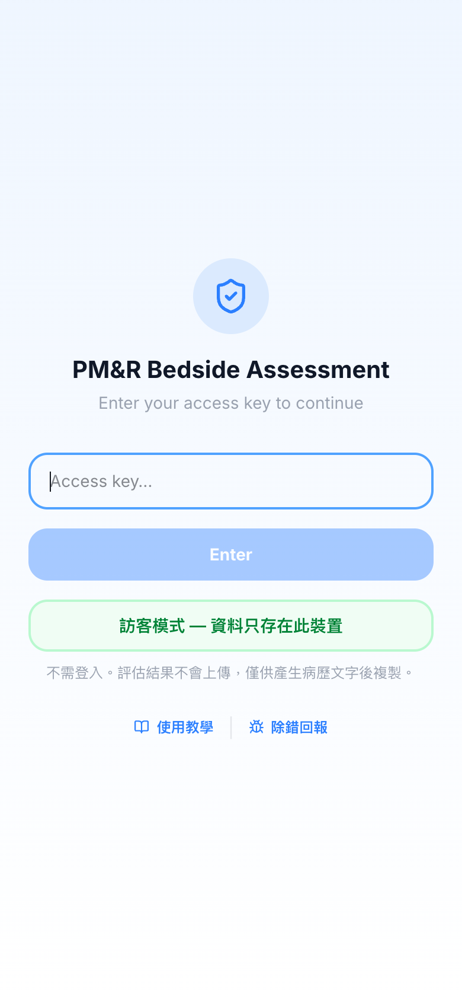
輸入框會自動擋掉中文字，填錯也存不進去。整套工具沒有姓名欄位。
首頁 → 作答 → Generate Note。這章跑完就夠日常用。
病歷號與日期都是選填，但填了 note 抬頭才帶得出來。
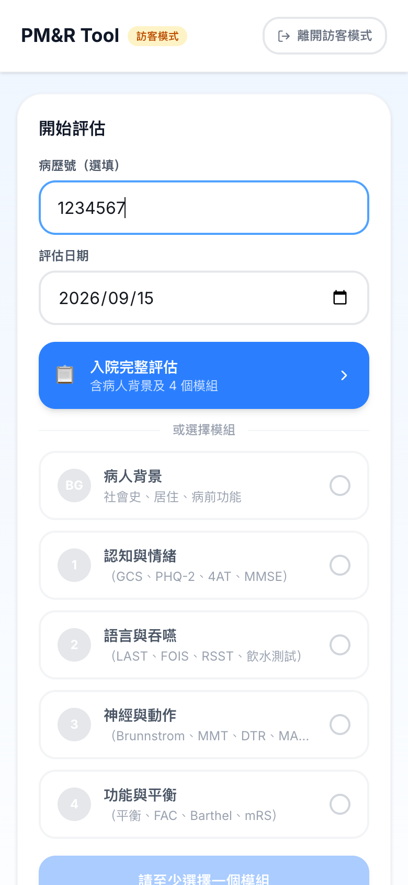
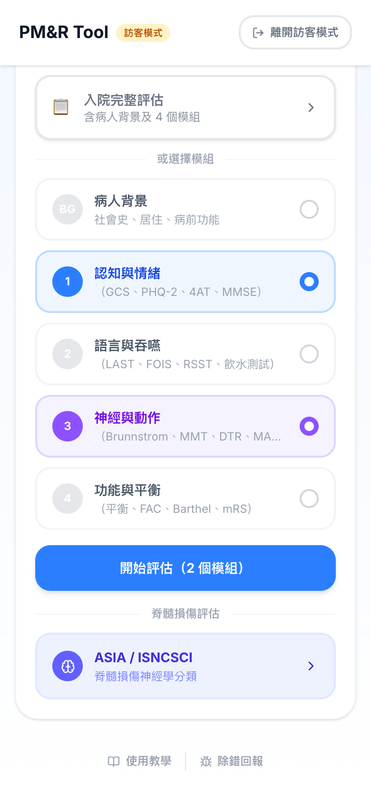
每個模組一種顏色，之後在題目頁的進度條上也是同一色，一眼知道自己做到哪一段。
每題上方是進度條（第幾題 / 共幾題），下方固定一顆 Next。分數是點的，不打字。
像 GCS 這種多欄位的題目，收起時直接顯示反應內容（Pain、Sounds、W/draw），不用展開就看得到自己填了什麼。
作答即時存在本機，中途被叫走、手機鎖屏都不會掉。
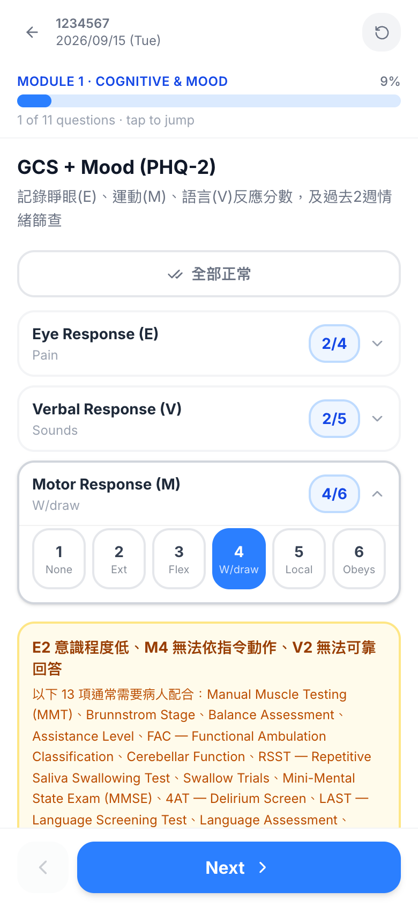
跳出完整英文 note，直接複製貼進 HIS，或用分享丟給手機的 LINE／Mail。
沒填的項目印 N/A，標記無法配合的印 Unable to assess——不會假裝那項是正常。
右上角「新評估」＝清空重來；「回主畫面」＝這份留在今日清單裡。
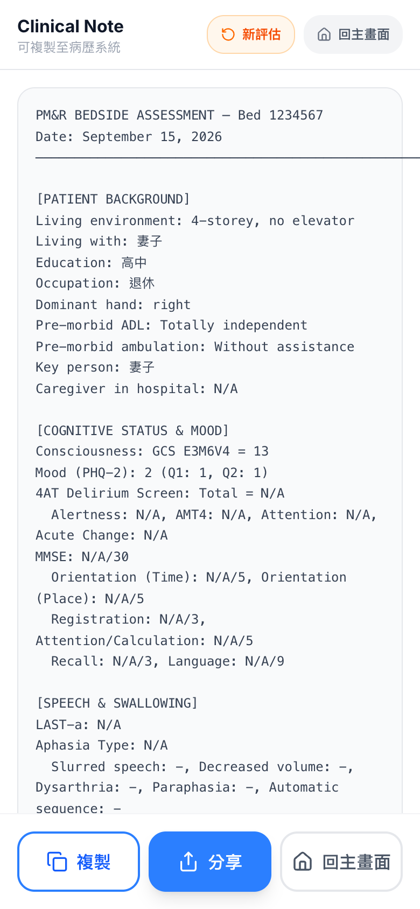
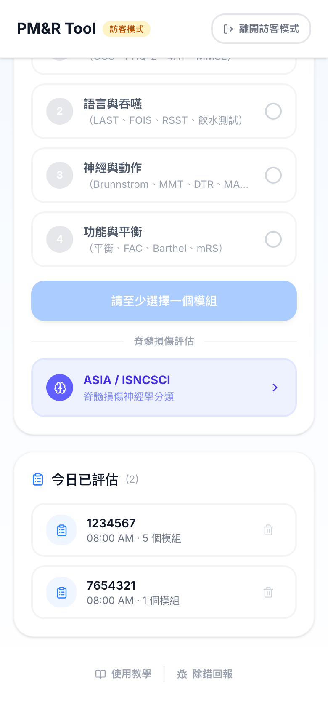
回首頁往下捲就看得到今天做過的每一床，點進去可以再看一次那份 note。
這份清單只存在這台裝置，關掉瀏覽器資料仍在，但換手機就沒有。
一床從三分鐘變一分鐘，大概就靠這四個。
GCS、腦神經、DTR、MAS、感覺、小腦這幾題有這顆。按一下整題填成正常值，再按一下取消回到未評。
先按「全部正常」、再改掉異常的那幾格，比一格一格點快得多。
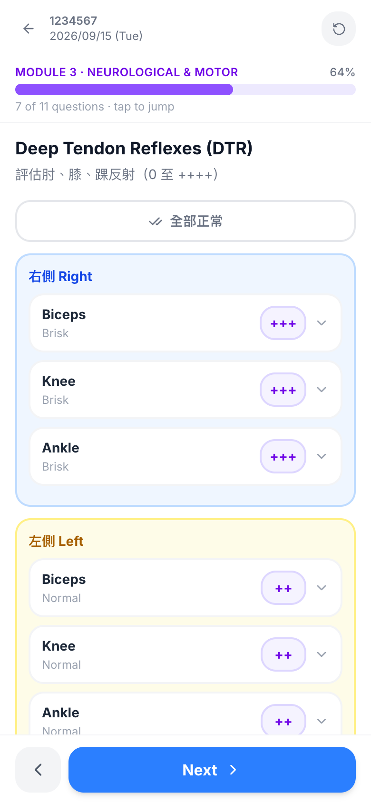
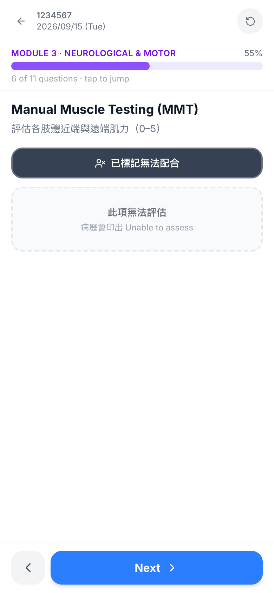
只出現在需要病人配合的題目（MMT、Brunnstrom、平衡、FAC、MMSE、LAST、吞嚥…）。反射、腦神經那類不需要配合的沒有這顆。
標了之後該題印 Unable to assess，不會混進「正常」裡。
E、V、M 分數一填，若病人根本無法依指令動作，系統會直接列出「這 13 項通常需要配合」，一顆按鈕全部標成無法配合。
只是建議，按了才會寫進去；也可以先按再逐題取消。
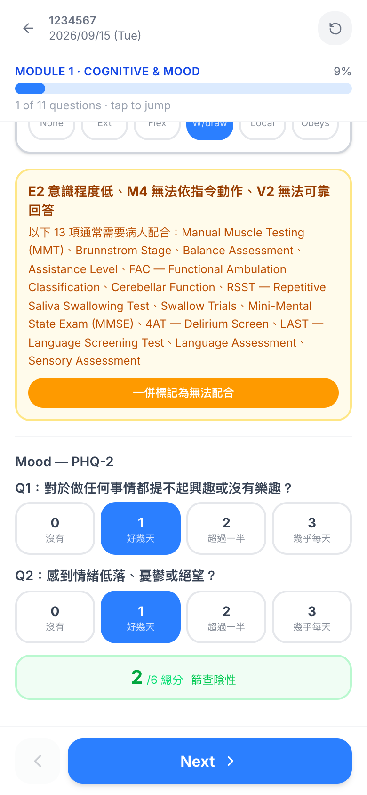
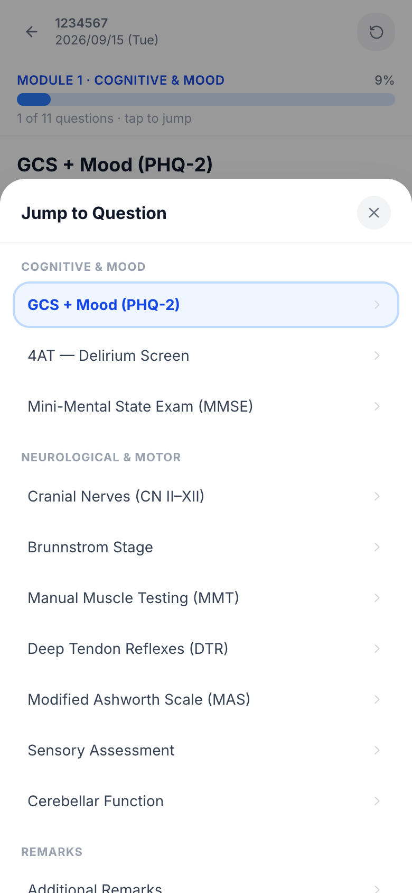
不必一路 Next。點上方那條「x of y questions · tap to jump」就跳出全部題目，直接跳到要改的那題。
右上角的圓形箭頭是重置——會清掉這份評估，按下去前先確認。
六步：感覺（頸／胸／腰薦）→ 運動（上肢／下肢＋肛門檢查）→ Calculate Score。
左右各一欄 LT / PP，點格子開分數選單（2 正常、1 異常、0 無感覺、NT 無法測試）。
中間那顆 ↓0 是「這一節以下全部歸零」——完全損傷不用點四十幾次。
頂端「參考圖」隨時叫出官方 worksheet 的皮節／肌節對照。
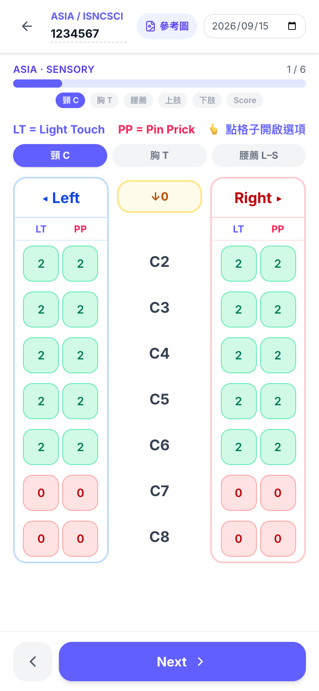
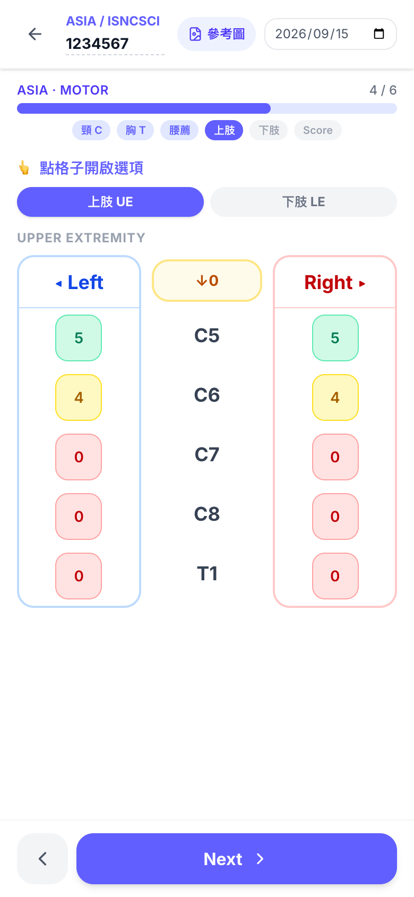
上肢 C5–T1、下肢 L2–S1，同樣有 ↓0。
下肢頁最底下是 VAC / DAP 與「最低仍有動作的非關鍵肌群」——後者會影響 AIS B 還是 C，有就填。
AIS 分級下方直接列出判定理由（例：S4-5 無感覺殘留、DAP 陰性、無 VAC → 完全損傷 → AIS A），sensory / motor level、NLI、ZPP、各項總分一次到齊。
每個 level 旁邊都寫了定義，不用回頭翻書確認自己有沒有算錯。
底部「複製」給 HIS，「分享」給手機的 App。
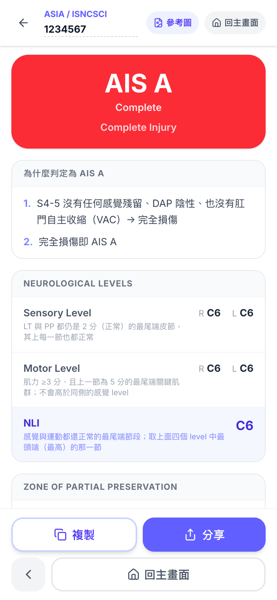
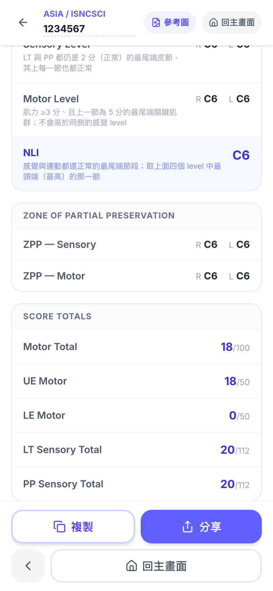
ASIA 有草稿，重新整理或被叫走回來時作答還在。從首頁的 ASIA 入口重新開一份才會清空。
同樣的評估流程，差別在資料留在伺服器，所以能跨天、跨裝置整理。
病人超過 14 天沒有新評估會先警示，第 28 天自動清除（清除前系統會把紀錄寄回給你）。要留的東西請自己複製出來。
訪客模式存在瀏覽器（同一台裝置、同一個瀏覽器才看得到），登入模式存在伺服器。訪客模式清瀏覽器資料＝全部消失。
桌機瀏覽器沒有系統分享功能，只會有「複製」。手機上兩顆都在。
預設是粗評：四肢各一張卡，近端／遠端兩格，一頁做完。切到細評才會出現四肢分頁與逐條關鍵肌群（C5–T1、L2–S1）。
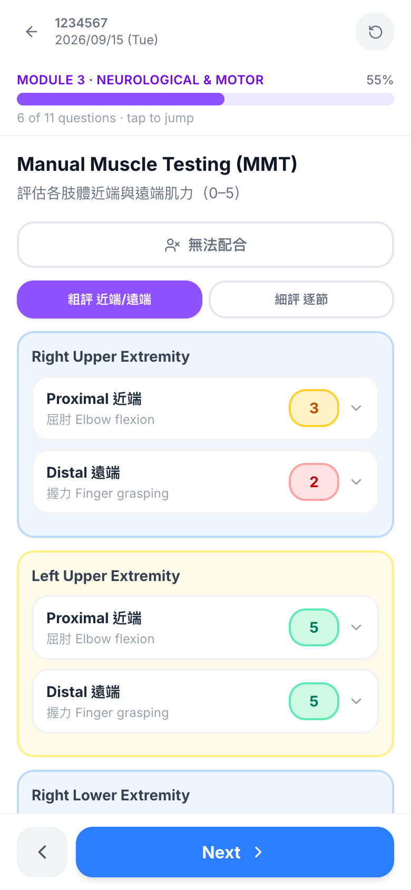
是刻意的。這套工具只收病歷號，姓名不進系統。
登入畫面下方的「除錯回報」可以直接在 App 裡回報，不用另外寫信。